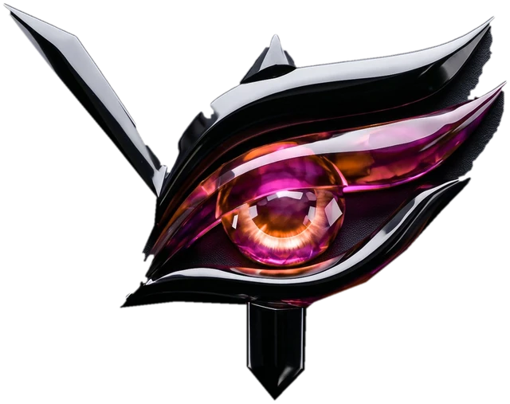

Film & Production
Narrative films, branded films, short-form stories and cinematic productions built from concept to capture.
- Direction
- Cinematography
- Production

Vajradhan is an independent filmmaking and visual production studio crafting cinematic films, visual campaigns and digital experiences from concept to final frame.
Start a ProjectVajradhan is an independent filmmaking and visual production studio built around one belief: great visual storytelling should be felt before it is explained.
From the first idea to the final frame, we bring together storytelling, cinematography, editing and visual craft to create work with purpose, atmosphere and identity.
We don’t just make content. We build visual experiences.
What we makeA glimpse into how we see stories, frames and worlds.
We bring storytelling, production and post-production together under one creative direction.
Narrative films, branded films, short-form stories and cinematic productions built from concept to capture.
Cinematic social content and visual campaigns designed to give brands a stronger visual identity.
The final layer where every frame is shaped, refined and finished.
Visual systems and content built to make brands more recognisable, consistent and memorable.
A selection of films, campaigns and visual experiments created across production, post and digital.
Building a cinematic visual language around an emerging digital universe.
Premium product visuals designed to give the brand a distinctive cinematic identity.
Cinematic property visuals created to communicate space, atmosphere and detail.
Original visual stories created to explore new worlds, ideas and filmmaking techniques.
Two minds. One visual language.
Story development, screenplay, dialogue, shot planning, scene direction and post-production.
Cinematography, visual direction, editing and post-production.
One team carries the work from the first conversation to the delivered master, so nothing is lost in the hand-offs between them.
We understand the story, objective and feeling behind the project.
Phase 01Concepts, references, treatments and visual direction are shaped into a clear creative vision.
Phase 02We bring the vision to life through direction, cinematography and production.
Phase 03Editing, colour, sound, motion and VFX transform the footage into the final piece.
Phase 04The finished work is refined, mastered and prepared for where it needs to live.
Phase 05Tell us what you’re building, what you’re imagining, or simply where you want to take an idea.
Let’s create something worth remembering.